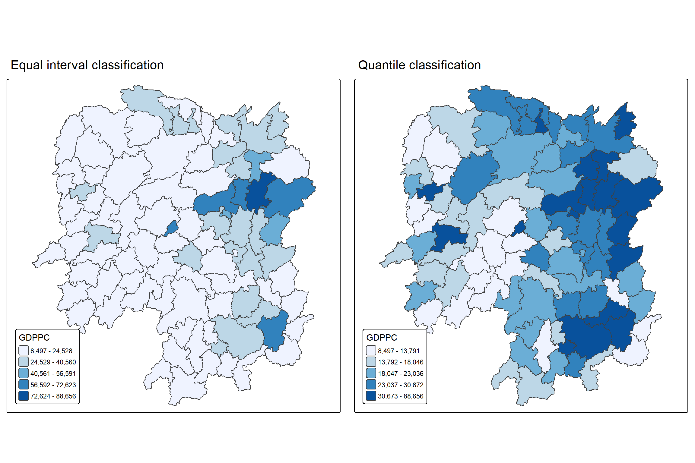
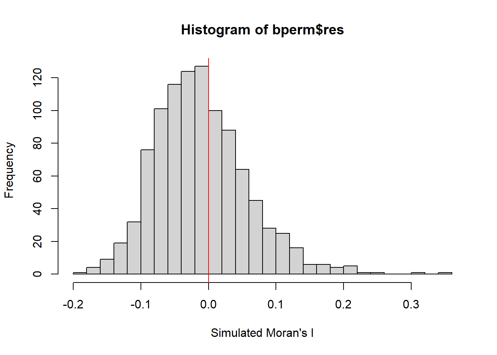
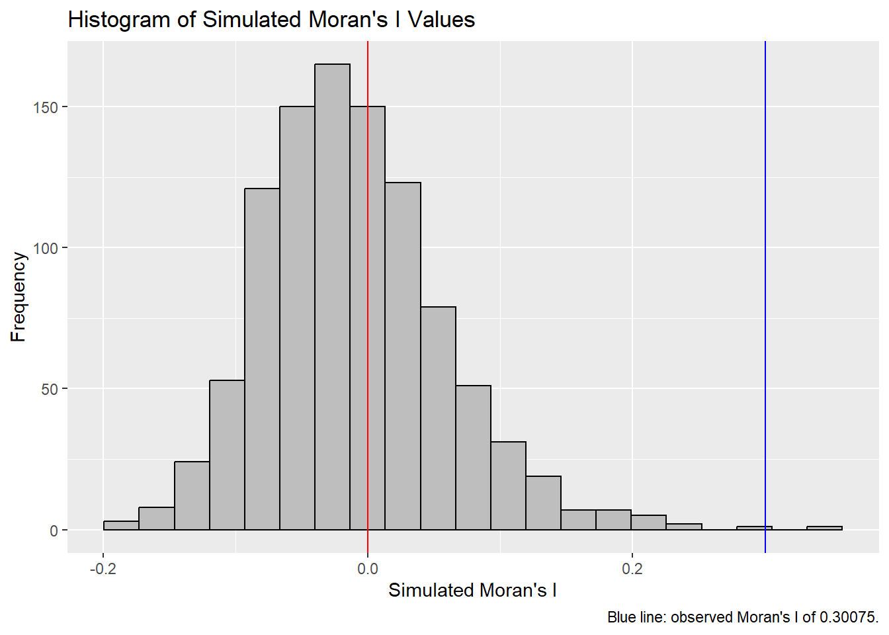
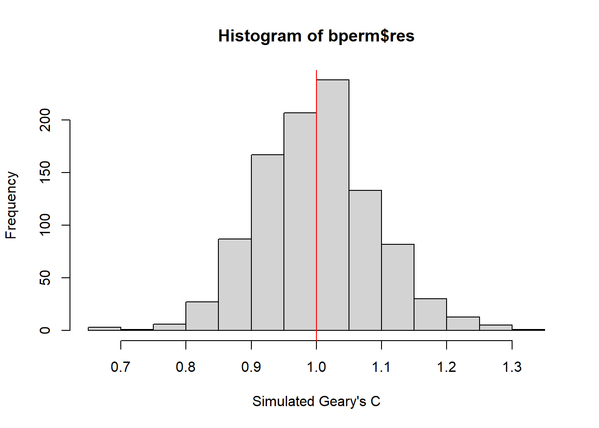
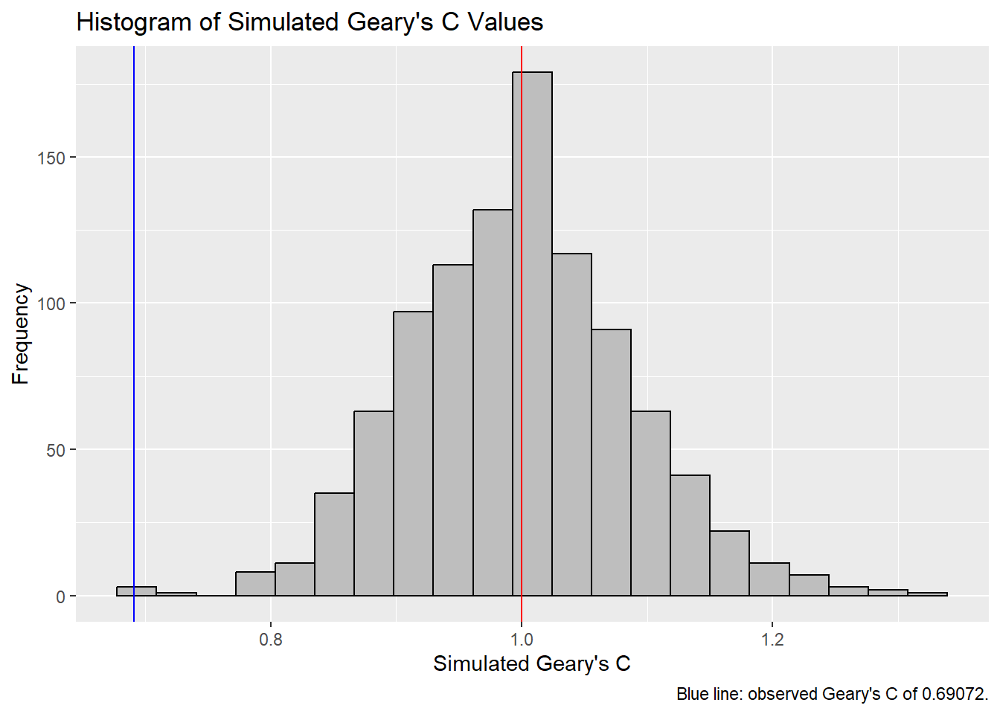

pacman::p_load(sf, spdep, tmap, tidyverse)Hands-on Exercise 5A: Global Measures of Spatial Autocorrelation
1 Overview
Spatial autocorrelation describes whether values at nearby locations resemble one another more than would be expected if values were assigned to locations at random. Similar values that sit close together produce positive spatial autocorrelation, while dissimilar values that sit close together produce negative spatial autocorrelation. Global measures condense this tendency into a single statistic for the whole study area. They indicate whether spatial dependence exists, but not where it is concentrated.
This exercise covers the following:
- import geospatial data using appropriate function(s) of sf package
- import csv file using appropriate function of readr package
- perform relational join using appropriate join function of dplyr package
- compute Global Spatial Autocorrelation (GSA) statistics by using appropriate functions of spdep package, plot Moran scatterplot, and compute and plot spatial correlogram using appropriate function of spdep package
- provide statistically correct interpretation of GSA statistics
2 Analytical Questions
In spatial policy, one of the main development objectives of the local government and planners is to ensure equal distribution of development in the province.
This exercise examines the spatial pattern of a selected development indicator, GDP per capita (“GDPPC”), of Hunan Province, China. Three questions are addressed in sequence:
- Is
GDPPCevenly distributed across the counties of Hunan? - If not, is there evidence of spatial clustering?
- If so, where are the clusters located?
The first two questions are answered in this exercise using global measures of spatial autocorrelation. The third is addressed in Hands-on Exercise 5B using local measures.
3 The Study Area and Data
Two data sets are used:
| Data set | Format | Description |
|---|---|---|
| Hunan | ESRI shapefile | County boundary layer for Hunan province |
| Hunan_2012.csv | csv | Selected local development indicators for Hunan’s counties in 2012 |
4 Installing and Loading R Packages
Four packages are used in this exercise:
- sf imports and handles the geospatial data
- tidyverse supports attribute data handling
- spdep computes the spatial weights and the global spatial autocorrelation statistics
- tmap produces the choropleth maps
5 Reproducibility
The Monte Carlo tests in this exercise, moran.mc() and geary.mc(), rely on random permutations of the data. A seed is set so that the simulated results are identical across renders.
set.seed(123)6 Getting the Data into R
The boundary layer and the indicator table are imported separately and then combined through a relational join.
6.1 Importing the Shapefile
The shapefile is imported with st_read() of sf, which returns a simple features object.
hunan <- st_read(dsn = "data/geospatial",
layer = "Hunan")Reading layer `Hunan' from data source
`C:\yxlinn\ISSS626-GAA\Hands-on_Ex\Hands-on_Ex05A\data\geospatial'
using driver `ESRI Shapefile'
Simple feature collection with 88 features and 7 fields
Geometry type: POLYGON
Dimension: XY
Bounding box: xmin: 108.7831 ymin: 24.6342 xmax: 114.2544 ymax: 30.12812
Geodetic CRS: WGS 846.2 Importing the CSV File
Hunan_2012.csv is imported with read_csv() of readr, which returns a data frame class.
hunan2012 <- read_csv("data/aspatial/Hunan_2012.csv")6.3 Performing relational join
The attribute table of hunan is extended with the fields of hunan2012 using left_join() of dplyr.
hunan <- left_join(hunan, hunan2012) %>%
select(1:4, 7, 15)6.4 Visualising Regional Development Indicator
The distribution of GDPPC 2012 is mapped as two choropleth maps using tmap, one with equal interval classification and the other with quantile classification.
equal <- tm_shape(hunan) +
tm_polygons(fill = "GDPPC",
fill.scale = tm_scale_intervals(
style = "equal",
n = 5,
values = "brewer.blues")) +
tm_layout(legend.position = c("left", "bottom"),
main.title = "Equal interval classification")
quantile <- tm_shape(hunan) +
tm_polygons(fill = "GDPPC",
fill.scale = tm_scale_intervals(
style = "quantile",
n = 5,
values = "brewer.blues")) +
tm_layout(legend.position = c("left", "bottom"),
main.title = "Quantile classification")
tmap_arrange(equal,
quantile,
asp = 1,
ncol = 2)
Note
Interpretation:
In both maps, high-value counties tend to sit next to other high-value counties, and low-value counties next to low-value ones.
Under equal interval classification, most counties fall in the lowest class (GDPPC up to 24,528). Only a handful of counties reach the upper classes, and a single county in the east-central part of the province falls in the highest class (72,624 to 88,656). Counties in the middle classes lie next to it, mainly in the northeast and east. As the classes are of equal width and the highest value is far above the rest, the map separates the few high-value counties from the many low-value ones but shows little variation among the majority.
Under quantile classification, each class holds roughly the same number of counties, so the differences among the majority become visible. The higher classes are mainly concentrated in the northeast, east, and southeast of the province, while the west and southwest are mostly in the lower classes. A few isolated counties in the west fall in the top class despite lighter neighbours. The top class spans a wide range from 30,673 to 88,656.
7 Global Measures of Spatial Autocorrelation
This section computes global spatial autocorrelation statistics and performs a test of complete spatial randomness for global spatial autocorrelation.
7.1 Computing Contiguity Spatial Weights
Before the global spatial autocorrelation statistics can be computed, spatial weights must be constructed for the study area. The spatial weights define the neighbourhood relationships between the geographical units, which are the counties in this case.
poly2nb()of spdep computes contiguity weight matrices for the study area. The function builds a neighbours list from regions with contiguous boundaries. It takes a queen argument that accepts TRUE or FALSE. If the argument is not specified, the default is TRUE, and the function returns a list of first order neighbours under the Queen criterion.
The code chunk below computes the Queen contiguity weight matrix:
wm_q <- poly2nb(hunan,
queen = TRUE)
summary(wm_q)Neighbour list object:
Number of regions: 88
Number of nonzero links: 448
Percentage nonzero weights: 5.785124
Average number of links: 5.090909
Link number distribution:
1 2 3 4 5 6 7 8 9 11
2 2 12 16 24 14 11 4 2 1
2 least connected regions:
30 65 with 1 link
1 most connected region:
85 with 11 linksThe summary report shows that there are 88 area units in Hunan. The most connected area unit has 11 neighbours (Region 85). There are two area units (Region 30 and 65) with only one neighbour.
7.2 Row-standardised Weights Matrix
Each neighbouring polygon is then assigned a weight. Here, all neighbours receive equal weight (style = “W”). This is done by assigning the fraction 1 / (number of neighbours) to each neighbouring county, and then summing the weighted GDPPC values. While this is the most intuitive way to summarise the neighbouring values, it has one drawback: polygons along the edge of the study area base their lagged values on fewer neighbours, which can over- or understate the true spatial autocorrelation in the data. Row-standardised weights are used here for simplicity, although other more robust options are available, notably style = “B”.
The code chunk below converts the neighbours list into a weights list using nb2listw():
rswm_q <- nb2listw(wm_q,
style = "W",
zero.policy = TRUE)
rswm_qCharacteristics of weights list object:
Neighbour list object:
Number of regions: 88
Number of nonzero links: 448
Percentage nonzero weights: 5.785124
Average number of links: 5.090909
Weights style: W
Weights constants summary:
n nn S0 S1 S2
W 88 7744 88 37.86334 365.9147
TipLearning Points
- The input of
nb2listw()must be an object of class nb, which is whatpoly2nb()returns. Its two main arguments arestyleandzero.policy. stylesets how weights are assigned to neighbours. It takes the values “W”, “B”, “C”, “U”, “minmax” and “S”:- “B” is binary coding, where every neighbour receives a weight of 1.
- “W” is row-standardised, where the weights of each county’s neighbours sum to 1, so all weights together sum to the number of counties.
- “C” is globally standardised, where all weights together sum to the number of counties.
- “U” is “C” divided by the number of neighbours, so all weights together sum to 1.
- “minmax” divides the weights by the smaller of the largest row sum and the largest column sum of the input weights.
- “S” is the variance-stabilising coding scheme of Tiefelsdorf et al. (1999), where all weights together sum to the number of counties.
zero.policycontrols how counties without neighbours are handled. IfFALSE, the function stops with an error for any such county. IfTRUE, the county stays in the weights list with an empty weights vector, and its spatially lagged value is zero, which may or may not be a sensible choice. Every county inhunanhas at least one neighbour, so the argument has no effect here.
8 Global Measures of Spatial Autocorrelation: Moran’s I
This section performs Moran’s I statistical testing by using moran.test() and moran.mc() of spdep.
Moran’s I compares the value of each county with the average value of its neighbours. The null hypothesis is that GDPPC is randomly distributed across the counties of Hunan, so that there is no spatial autocorrelation. The alternative hypothesis is that similar values are found near one another, which is positive spatial autocorrelation.
8.1 Moran’s I Test
The code chunk below performs Moran’s I statistical testing using moran.test() of spdep.
moran.test(hunan$GDPPC,
listw = rswm_q,
zero.policy = TRUE,
na.action = na.omit)
Moran I test under randomisation
data: hunan$GDPPC
weights: rswm_q
Moran I statistic standard deviate = 4.7351, p-value = 1.095e-06
alternative hypothesis: greater
sample estimates:
Moran I statistic Expectation Variance
0.300749970 -0.011494253 0.004348351
Note
Interpretation:
The Moran’s I statistic is 0.30075, above its expected value of -0.0115 under the null hypothesis of spatial randomness. The standard deviate is 4.7351 and the p-value is 1.095e-06, so the null hypothesis is rejected at the 95% confidence level since the p-value is less than 0.05.
Therefore, GDPPC shows statistically significant positive spatial autocorrelation. Counties with similar GDPPC values tend to be located near one another.
8.2 Computing Monte Carlo Moran’s I
The code chunk below performs permutation test for Moran’s I statistic by using moran.mc() of spdep. A total of 1000 simulation is performed.
bperm <- moran.mc(hunan$GDPPC,
listw = rswm_q,
nsim = 999,
zero.policy = TRUE,
na.action = na.omit)
bperm
Monte-Carlo simulation of Moran I
data: hunan$GDPPC
weights: rswm_q
number of simulations + 1: 1000
statistic = 0.30075, observed rank = 999, p-value = 0.001
alternative hypothesis: greater
Note
Interpretation:
The Moran’s I statistic is 0.30075, the same value as in the Moran’s I test under randomisation. It ranks 999th among the 1,000 values, made up of the 999 simulated statistics and the observed one, so it lies at the upper end of the simulated distribution. The p-value is 0.001, which is less than 0.05, so the null hypothesis of spatial randomness is rejected at the 95% confidence level.
This agrees with the Moran’s I test under randomisation, where GDPPC shows statistically significant positive spatial autocorrelation.
8.3 Visualising Monte Carlo Moran’s I
The distribution of the simulated statistics is examined in more detail. The mean, variance and summary statistics are computed.
mean(bperm$res[1:999])[1] -0.01115947var(bperm$res[1:999])[1] 0.004622495summary(bperm$res[1:999]) Min. 1st Qu. Median Mean 3rd Qu. Max.
-0.18019 -0.05839 -0.01751 -0.01116 0.02738 0.35101 The distribution is then plotted as a histogram using hist() and abline() of base R, with the red line marking zero:
hist(bperm$res,
freq = TRUE,
breaks = 20,
xlab = "Simulated Moran's I")
abline(v = 0,
col = "red")
Note
The 999 simulated values of Moran’s I have a mean of -0.01116 and a variance of 0.004622. Half of the simulated values lie between -0.05839 and 0.02738.
The distribution is unimodal, with the tallest bars just to the left of the red line at zero, and it is right-skewed. The median of -0.01751 is below the mean, and the maximum of 0.35101 lies further from the median than the minimum of -0.18019. The histogram shows the same pattern, with the right tail thinning out gradually and a few isolated bars beyond 0.2.
The Moran’s I statistic of 0.30075 is well above the third quartile of the simulated values, and it ranks 999th of the 1,000 values. Very few random arrangements of GDPPC produce a statistic this large, which supports rejecting the null hypothesis of spatial randomness.
8.3.1 Challenge: Histogram with ggplot2
The same histogram is drawn with ggplot2. The blue line marks the observed statistic, which makes the comparison with the simulated distribution visible on the plot.
ggplot(data.frame(x = bperm$res), aes(x = x)) +
geom_histogram(binwidth = diff(range(bperm$res)) / 20,
fill = "grey",
color = "black") +
geom_vline(xintercept = 0,
color = "red",
linetype = "solid") +
geom_vline(xintercept = unname(bperm$statistic),
color = "blue",
linetype = "solid") +
labs(x = "Simulated Moran's I",
y = "Frequency",
title = "Histogram of Simulated Moran's I Values",
caption = paste0("Blue line: observed Moran's I of ",
round(unname(bperm$statistic), 5), "."))
9 Global Measures of Spatial Autocorrelation: Geary’s C
This section performs Geary’s C statistical testing using geary.test() and geary.mc() of spdep.
The null hypothesis is that GDPPC is randomly distributed across the counties of Hunan, and hence there is no spatial autocorrelation. Under the null hypothesis, the expected value of Geary’s C is 1. A value below 1 indicates positive spatial autocorrelation, and a value above 1 indicates negative spatial autocorrelation. This is the reverse of Moran’s I, where larger values indicate positive spatial autocorrelation.
9.1 Geary’s C Test
The code chunk below performs Geary’s C test for spatial autocorrelation by using geary.test() of spdep.
geary.test(hunan$GDPPC, listw = rswm_q)
Geary C test under randomisation
data: hunan$GDPPC
weights: rswm_q
Geary C statistic standard deviate = 3.6108, p-value = 0.0001526
alternative hypothesis: Expectation greater than statistic
sample estimates:
Geary C statistic Expectation Variance
0.6907223 1.0000000 0.0073364
Note
Interpretation:
The Geary’s C statistic is 0.6907, which is below its expected value of 1. The standard deviate is 3.6108 and the p-value is 0.0001526. The null hypothesis is therefore rejected at the 95% confidence level since p-value is less than 0.05.
GDPPC shows statistically significant positive spatial autocorrelation. Counties with similar GDPPC values tend to be located near one another. This agrees with the Moran’s I test under randomisation.
9.2 Computing Monte Carlo Geary’s C
The code chunk below performs permutation test for Geary’s C statistic by using geary.mc() of spdep.
bperm <- geary.mc(hunan$GDPPC,
listw = rswm_q,
nsim = 999)
bperm
Monte-Carlo simulation of Geary C
data: hunan$GDPPC
weights: rswm_q
number of simulations + 1: 1000
statistic = 0.69072, observed rank = 3, p-value = 0.003
alternative hypothesis: greater
Note
Interpretation:
The Geary’s C statistic is 0.69072, the same value as in the Geary’s C test under randomisation. It ranks 3rd among the 1,000 values. Small values of Geary’s C indicate positive spatial autocorrelation. The p-value is 0.003, which is less than 0.05, so the null hypothesis of spatial randomness is rejected at the 95% confidence level.
This agrees with the Geary’s C test under randomisation. GDPPC shows statistically significant positive spatial autocorrelation.
9.3 Visualising the Monte Carlo Geary’s C
The distribution of the simulated statistics is examined in more detail. The mean, variance and summary statistics are computed.
mean(bperm$res[1:999])[1] 0.9991608var(bperm$res[1:999])[1] 0.007740014summary(bperm$res[1:999]) Min. 1st Qu. Median Mean 3rd Qu. Max.
0.6843 0.9396 1.0005 0.9992 1.0528 1.3146 The distribution is then plotted as a histogram, with the red line marking 1, the expected value under the null hypothesis:
hist(bperm$res,
freq = TRUE,
breaks = 20,
xlab = "Simulated Geary's C")
abline(v = 1,
col = "red")
Note
Interpretation:
The 999 simulated values of Geary’s C have a mean of 0.99916 and a median of 1.0005, both are close to the expected value of 1 under the null hypothesis. The variance is 0.007740. The distribution is approximately symmetric and bell-shaped, centred near the red line at 1.
The Geary’s C statistic is 0.69072, which lies below the first quartile of the simulated values (0.9396) and is only slightly above the simulated minimum. A statistic this small is rarely produced by a random arrangement of GDPPC across the counties. Since small values of Geary’s C indicate positive spatial autocorrelation, this supports rejecting the null hypothesis of spatial randomness.
9.3.1 Challenge: Histogram with ggplot2
The same histogram is drawn with ggplot2. The red line marks 1, the expected value under the null hypothesis, and the blue line marks the observed Geary’s C.
ggplot(data.frame(x = bperm$res), aes(x = x)) +
geom_histogram(binwidth = diff(range(bperm$res)) / 20,
fill = "grey",
color = "black") +
geom_vline(xintercept = 1,
color = "red",
linetype = "solid") +
geom_vline(xintercept = unname(bperm$statistic),
color = "blue",
linetype = "solid") +
labs(x = "Simulated Geary's C",
y = "Frequency",
title = "Histogram of Simulated Geary's C Values",
caption = paste0("Blue line: observed Geary's C of ",
round(unname(bperm$statistic), 5), "."))
10 Spatial Correlogram
A spatial correlogram shows how spatial autocorrelation changes as the separation between observations increases. It plots an index of autocorrelation, Moran’s I or Geary’s C, against the lag, so that the direction and strength of the autocorrelation can be read at each lag. Correlograms can be applied to a variable or to the residuals of a model. They are less fundamental than variograms, a core tool of geostatistics, but they are useful as an exploratory and descriptive tool for seeing how far spatial dependence extends.
10.1 Moran’s I Correlogram
sp.correlogram() of spdep computes a spatial correlogram. The code chunk below computes a 6-lag correlogram of GDPPC using Moran’s I, and plot() of base R plots the result:
MI_corr <- sp.correlogram(wm_q,
hunan$GDPPC,
order = 6,
method = "I",
style = "W")
plot(MI_corr)
The plot alone does not show which of the autocorrelation values are statistically significant. Hence, it is important to examine the full analysis report by printing out the analysis results.
print(MI_corr)Spatial correlogram for hunan$GDPPC
method: Moran's I
estimate expectation variance standard deviate Pr(I) two sided
1 (88) 0.3007500 -0.0114943 0.0043484 4.7351 2.189e-06 ***
2 (88) 0.2060084 -0.0114943 0.0020962 4.7505 2.029e-06 ***
3 (88) 0.0668273 -0.0114943 0.0014602 2.0496 0.040400 *
4 (88) 0.0299470 -0.0114943 0.0011717 1.2107 0.226015
5 (88) -0.1530471 -0.0114943 0.0012440 -4.0134 5.984e-05 ***
6 (88) -0.1187070 -0.0114943 0.0016791 -2.6164 0.008886 **
---
Signif. codes: 0 '***' 0.001 '**' 0.01 '*' 0.05 '.' 0.1 ' ' 1
Note
Interpretation:
The spatial correlogram shows how Moran’s I changes as the lag between counties increases. Lag 1 refers to the immediate neighbours, and each further lag steps one county further out.
1. Significant positive spatial autocorrelation at short lags (lags 1 to 3)
- At lags 1 and 2, Moran’s I is positive (0.30075 and 0.20601) and highly significant (p-values of 2.189e-06 and 2.029e-06, both below 0.05). Counties tend to have GDPPC values similar to those of their immediate neighbours.
- At lag 3, Moran’s I is smaller (0.06683), and its p-value of 0.0404 is below 0.05, so it is significant at the 5% level.
2. No significant spatial autocorrelation at lag 4
- Moran’s I is 0.02995 and the p-value is 0.226. The null hypothesis of spatial randomness is not rejected at this lag since p-value is greater than 0.05. The autocorrelation at this lag cannot be distinguished from spatial randomness.
3. Significant negative spatial autocorrelation at long lags (lags 5 and 6)
- Moran’s I is negative (-0.15305 and -0.11871) and significant (p-values of 5.984e-05 and 0.008886, both below 0.05), indicating statistically significant negative spatial autocorrelation.
Overall, the positive spatial autocorrelation weakens as the lag increases, and turns significantly negative at lags 5 and 6.
10.2 Compute Geary’s C Correlogram and Plot
The code chunk below computes a 6-lag spatial correlogram of GDPPC using Geary’s C, with sp.correlogram() of spdep. The result is plotted with plot() of base R.
GC_corr <- sp.correlogram(wm_q,
hunan$GDPPC,
order = 6,
method = "C",
style = "W")
plot(GC_corr)
The full results for Geary’s C are printed in the code chunk below:
print(GC_corr)Spatial correlogram for hunan$GDPPC
method: Geary's C
estimate expectation variance standard deviate Pr(I) two sided
1 (88) 0.6907223 1.0000000 0.0073364 -3.6108 0.0003052 ***
2 (88) 0.7630197 1.0000000 0.0049126 -3.3811 0.0007220 ***
3 (88) 0.9397299 1.0000000 0.0049005 -0.8610 0.3892612
4 (88) 1.0098462 1.0000000 0.0039631 0.1564 0.8757128
5 (88) 1.2008204 1.0000000 0.0035568 3.3673 0.0007592 ***
6 (88) 1.0773386 1.0000000 0.0058042 1.0151 0.3100407
---
Signif. codes: 0 '***' 0.001 '**' 0.01 '*' 0.05 '.' 0.1 ' ' 1
Note
Interpretation:
The spatial correlogram shows how Geary’s C changes as the lag between counties increases. Small values of Geary’s C, below 1, indicate positive spatial autocorrelation, and large values, above 1, indicate negative spatial autocorrelation.
1. Significant positive spatial autocorrelation at short lags (lags 1 and 2)
- Geary’s C is below 1 (0.69072 and 0.76302) and significant (p-values of 0.0003052 and 0.0007220, both below 0.05), indicating statistically significant positive spatial autocorrelation. Counties tend to have
GDPPCvalues similar to those of their immediate neighbours and of the neighbours of those neighbours.
2. No significant spatial autocorrelation at lags 3, 4 and 6
- Geary’s C is 0.93973, 1.00985 and 1.07734, with p-values of 0.3893, 0.8757 and 0.3100, all above 0.05. The autocorrelation at these lags cannot be distinguished from spatial randomness.
3. Significant negative spatial autocorrelation at lag 5
- Geary’s C is above 1 (1.20082) and significant (p-value of 0.0007592, below 0.05), indicating statistically significant negative spatial autocorrelation. Counties tend to have
GDPPCvalues that differ from those of counties five steps away.
Overall, Geary’s C rises from lag 1 to lag 5, so the positive spatial autocorrelation at short lags gives way to negative spatial autocorrelation at lag 5. The p-values are two-sided and not adjusted for testing six lags.